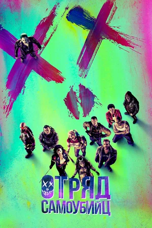

Валериан и город тысячи планет
2700 год. Валериан и Лорелин - космические спецагенты, которые по долго службы впутались в подозрительно дело и стали невольными участниками то ли межгалактического заговора, то ли аферы причудливых поселенцев планеты Альфа, прибывших туда из различных миров со всех уголков галктик.
Посмотреть

Отряд самоубийц
Фильм из вселенной DC Comics о команде суперзлодеев, которых отправляют на опасную правительственную задачу. Правительство собирает специальную команду из суперзлодеев, которые заключены в специальные камеры, для выполнения невероятно тяжёлой и опасной миссии. Удастся ли уникальным антигероям спасти человечество от уничтожения?
Посмотреть